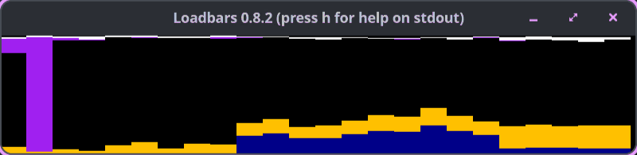

Loadbars 0.13.0 released
Published at 2026-03-01T00:00:00+02:00
Loadbars is a real-time server load monitoring tool. It connects to one or more Linux hosts via SSH and shows CPU, memory, network, load average, and disk I/O as vertical colored bars in an SDL window. You can run it locally or point it at your servers and see what's happening right now — like top or vmstat, but visual and across multiple hosts at once.

Loadbars can connect to hundreds of servers in parallel; the GIF above doesn't do it justice — at scale you get a wall of bars that makes it easy to spot outliers and compare hosts at a glance.
Loadbars on GitHub
Table of Contents
What Loadbars is (and isn't)
Loadbars shows the current state only. It is not a tool for collecting loads and drawing graphs for later analysis. There is no history and no database. Prometheus and Grafana are fine, but that's a lot of setup just to look at current load. Loadbars is one binary plus SSH, and I see the current state right away.
I mostly run it during deployments and load tests to spot which host is the odd one out, or for a quick health sweep across hosts I have no dashboards for.
┌─ Loadbars 0.13.0 ─────────────────────────────────────────┐
│ │
│ ████ ████ ████ ██ ████ ████ ████ ██ ░░██ ░░██ │
│ ████ ████ ████ ██ ████ ████ ████ ██ ░░██ ░░██ │
│ ████ ████ ████ ██ ████ ████ ████ ██ ░░██ ░░██ │
│ CPU cpu0 cpu1 mem CPU cpu0 cpu1 mem net net │
│ └──── host1 ────┘ └──── host2 ────┘ │
└───────────────────────────────────────────────────────────┘
Use cases
- Deployments and rollouts: watch CPU, memory, and network across app servers or nodes while you deploy. Spot the one that isn't coming up or is stuck under load.
- Load testing: run your load tool against a cluster and see which hosts (or cores) are saturated, whether memory or disk I/O is the bottleneck, and how load spreads.
- Quick health sweep: no dashboards yet? Point Loadbars at a handful of hosts and see who's busy and who's swapping.
- Comparing hosts: side-by-side bars make it easy to see if one machine is hotter than the rest (e.g. after a config change or migration).
- Local tuning: run loadbars --hosts localhost while you benchmark or stress a single box; the bars and load-average view help correlate activity with what you're doing.
What's new since the Perl version
The original Loadbars (Perl + SDL, ~2010–2013) had CPU, memory, network, ClusterSSH, and a config file. The Go rewrite added:
- Load average bars: 1/5/15-minute load per host, which the Perl version didn't have. Teal fill (1-min load), a yellow 1px line (5-min) and a white 1px line (15-min). The scale auto-adjusts with a floor of 2.0, or fixed via --loadmax N.
- Disk I/O bars: read/write throughput per host or per device, whole-disk devices only (partitions, loop, ram, zram, and device-mapper are excluded). Purple from the top is read, darker purple from the bottom is write; extended mode adds a 3px disk-utilization line. The diskaverage option sets how many samples the bars are averaged over.
- Extended peak line on CPU: a 1px line showing max system+user over the last N samples, so short spikes don't get smoothed away by the stacked bar.
- Tooltips and host highlight: hover the mouse over any bar for a tooltip with exact values (CPU %, memory, network, load, or disk). The hovered host's bars are inverted.
- GuestNice as a lime green segment in the CPU stack, above Nice.
- Global reference lines: a fleet-average CPU line (red), an I/O average line (pink), and thin red separator lines between hosts. The auto-scale peaks of the load and disk bars can be reset to the floor.
- The default window title shows the version. Override it with --title when you run several Loadbars windows side by side.
- maxbarsperrow and maxwidth: wrap the bars into multiple rows and cap the window width (default 1900 px) instead of one long, ever-growing row.
- Startup visibility flags: --showmem, --shownet, --showload, --extended, --cpumode, --diskmode (and friends) start with the bars you care about already on.
- --sshopts passes extra flags to ssh (ConnectTimeout, ProxyJump, ...) for one-off sessions without touching the global SSH config.
- hasagent skips the extra SSH agent checks when the key is already loaded.
- The config file now covers the full option set (the Perl config only covered part of it).
- Positional host arguments: loadbars server1 server2 works without --hosts.
- Window resize via the keyboard instead of the Perl version's mouse-based resize.
- Hundreds of hosts in parallel: the Go implementation connects to all hosts concurrently and keeps polling without blocking.
- macOS as client: run the binary on a Mac against remote Linux servers. The Perl version was Linux-only.
- A single static binary: no Perl runtime, no SDL Perl modules, no CPAN.
- Unit tests via mage test (or go test).
Reading the bars
CPU bars are stacked: System (blue), User (yellow), Nice (green), GuestNice (lime green), Idle (black), IOwait (purple), IRQ/SoftIRQ (white), Guest/Steal (red). They can be shown aggregate or per-core, or turned off entirely, which the Perl version couldn't do.
- Memory: left half RAM (dark grey/black), right half Swap (grey/black) per host.
- Network: RX on top (light green), TX at the bottom, summed over non-loopback interfaces. A red bar means the host has no non-loopback interface. --netlink switches the bars to utilization % against the link speed (default gbit).
All hotkeys
Key Action
───── ──────────────────────────────────────────────────
1 Toggle CPU (aggregate / per-core / off)
2 / m Toggle memory bars
3 / n Toggle network bars
4 / l Toggle load average bars
5 Toggle disk I/O (aggregate / per-device / off)
r Reset load and disk auto-scale peaks
e Toggle extended (peak line on CPU; disk util line)
g Toggle global average CPU line
i Toggle global I/O average line
s Toggle host separator lines
h Print hotkey list to stdout
q Quit
w Write current settings to ~/.loadbarsrc
a / y CPU average samples up / down
d / c Net average samples up / down
b / x Disk average samples up / down
f / v Link scale up / down
Arrows Resize window
SSH and config
Connect with public key auth; hosts need bash and /proc (Linux). No agent needed on the remote side.
loadbars --hosts server1,server2,server3
loadbars --hosts root@server1,root@server2
loadbars servername{01..50}.example.com --showcores 1
loadbars --cluster production
Config: ~/.loadbarsrc (key=value, no --; use # for comments). Any --help option. Press w to save current settings.
Go 1.25+ and SDL2. Install SDL2 (e.g. sudo dnf install SDL2-devel on Fedora, brew install sdl2 on macOS), then:
mage build
./loadbars --hosts localhost
mage install # to ~/go/bin
mage test
Tested on Fedora Linux 43 and common distros; macOS as client to remote Linux only (no local macOS monitoring — no /proc).
E-Mail your comments to paul@nospam.buetow.org :-)
Back to the main site